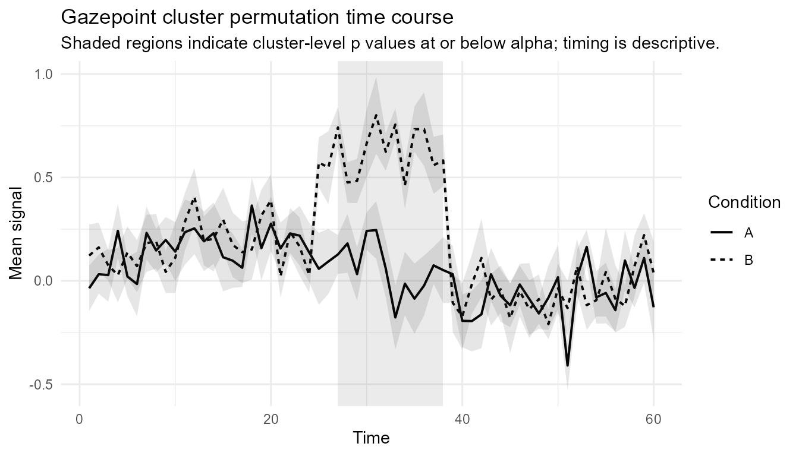
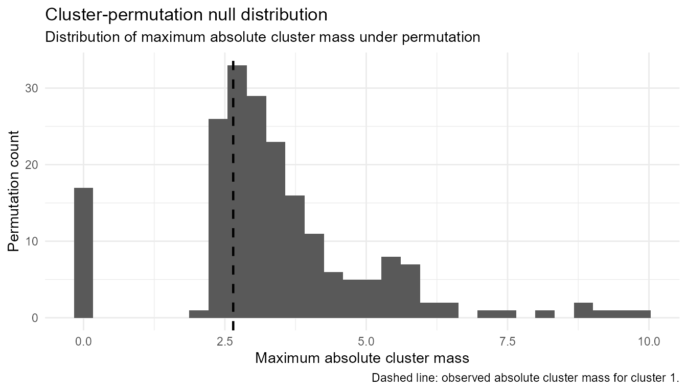

Cluster-permutation workflow
Source:vignettes/articles/cluster-permutation.Rmd
cluster-permutation.RmdPurpose
This article demonstrates the conservative cluster-permutation
workflow in gpbiometrics for two-condition, one-dimensional
time-course data.
The workflow is intentionally narrow: participant-level time courses, two conditions, one temporal dimension, cluster mass based on time-wise test statistics, permutation-based global inference, and descriptive interpretation of cluster timing.
The goal is not to replace specialist EEG, MEG, pupillometry, or mixed-model permutation toolboxes. The goal is to provide a transparent, reproducible, and guarded workflow for Gazepoint-derived time-course signals.
Interpretation warning
A significant cluster-permutation result indicates evidence against the global null hypothesis of no condition difference anywhere in the tested time range, under the implemented permutation scheme.
It does not prove that an effect begins or ends exactly at the reported cluster boundaries. Cluster timing should be described as a descriptive interval, not as a precise physiological, attentional, or cognitive onset or offset.
Simulate example data
We first create a small synthetic two-condition time-course data set. The example is deliberately synthetic so that the vignette can run without private participant data.
set.seed(123)
dat <- simulate_gazepoint_cluster_timecourse_data(
n_subjects = 12,
n_time = 60,
effect_start = 25,
effect_end = 38,
seed = 123
)
head(dat)
#> subject condition time true_effect value
#> 1 S01 A 1 0 0.02018967
#> 2 S02 A 1 0 -0.01327129
#> 3 S03 A 1 0 0.16734062
#> 4 S04 A 1 0 0.73239235
#> 5 S05 A 1 0 0.23146213
#> 6 S06 A 1 0 -0.35788062Audit the time-course grid
Cluster-permutation tests require a consistent participant-by-condition-by-time grid. The audit helper checks whether the expected cells are present and whether duplicate cells exist.
grid_audit <- audit_gazepoint_timecourse_grid(
data = dat,
subject = "subject",
condition = "condition",
time = "time",
value = "value"
)
grid_audit
#> Gazepoint time-course grid audit
#> --------------------------------
#> n_rows n_subjects n_conditions n_time_bins expected_cells
#> 1440 12 2 60 1440
#> observed_unique_cells missing_cells duplicate_cells missing_values
#> 1440 0 0 0
#> complete_grid
#> TRUE
#>
#> The grid is complete.Diagnose the design
The design diagnostic is a pre-analysis guardrail. It checks whether the data match the current supported scope: two conditions, repeated participant observations, and a common time grid.
design_diagnostic <- diagnose_gazepoint_cluster_design(
data = dat,
subject = "subject",
condition = "condition",
time = "time",
value = "value",
design = "within"
)
design_diagnostic
#> Gazepoint cluster-permutation design diagnostic
#> ------------------------------------------------
#> Design: within
#>
#> check passed severity
#> two_conditions TRUE ok
#> complete_grid TRUE ok
#> minimum_subjects TRUE ok
#> within_subject_condition_presence TRUE ok
#> supported_by_current_runner TRUE ok
#> message
#> Exactly two conditions are present.
#> Every participant-condition-time cell is present exactly once.
#> At least 10 participants are present.
#> Every participant appears in every condition.
#> The current runner supports the diagnosed within-subject, two-condition time-course design.
#>
#> No blocking design errors were detected.Prepare participant-level time-course data
The preparation helper keeps the analysis at the participant-by-condition-by-time level. If raw trial-level samples are supplied, repeated cells can be aggregated before the cluster test.
prepared <- prepare_gazepoint_timecourse_test_data(
data = dat,
outcome_col = "value",
time_col = "time",
condition_col = "condition",
participant_col = "subject"
)
head(prepared)
#> participant condition time value
#> 1 S01 A 1 0.02018967
#> 2 S01 A 2 0.09739217
#> 3 S01 A 3 0.04344428
#> 4 S01 A 4 -0.18120203
#> 5 S01 A 5 -0.23022769
#> 6 S01 A 6 -0.04747587Run the cluster-permutation test
The example uses a small number of permutations so the vignette builds quickly. For real analyses, use more permutations and report the exact settings.
cluster_result <- run_gazepoint_cluster_permutation(
data = prepared,
outcome_col = "value",
time_col = "time",
condition_col = "condition",
participant_col = "participant",
design = "within",
condition_a = "A",
condition_b = "B",
n_permutations = 199,
cluster_forming_alpha = 0.05,
cluster_alpha = 0.05,
seed = 123
)
cluster_result
#> Gazepoint cluster permutation test
#> Design: within
#> Conditions: A - B
#> Participants: 12
#> Time points: 60
#> Permutations: 199
#> Cluster-forming alpha: 0.05
#> Cluster-level alpha: 0.05
#> Clusters: 3
#> cluster_id direction start_time end_time n_timepoints mass p_value
#> 1 positive 53 53 1 2.647591 0.735
#> 2 negative 25 25 1 2.815247 0.655
#> 3 negative 27 38 12 40.347172 0.005
#> significant
#> FALSE
#> FALSE
#> TRUESummarize clusters
The cluster summary reports detected clusters, cluster mass, and permutation p-values. The time range is useful for description, but it should not be interpreted as an exact onset or offset.
cluster_summary <- summarize_gazepoint_time_clusters(cluster_result)
cluster_summary
#> cluster_id direction start_index end_index start_time end_time n_timepoints
#> 1 1 positive 53 53 53 53 1
#> 2 2 negative 25 25 25 25 1
#> 3 3 negative 27 38 27 38 12
#> signed_mass mass p_value significant
#> 1 2.647591 2.647591 0.735 FALSE
#> 2 -2.815247 2.815247 0.655 FALSE
#> 3 -40.347172 40.347172 0.005 TRUEPlot the result
The plotting helper overlays the two time courses and the detected cluster information. Use the plot to communicate the pattern, not to claim exact temporal localization.
plot_gazepoint_cluster_permutation(cluster_result)
Inspect the null distribution
The null-distribution plot shows the permutation distribution of the maximum cluster mass. This helps users understand the family-wise comparison used to evaluate observed clusters.
plot_gazepoint_cluster_null_distribution(cluster_result)
Check threshold sensitivity
Cluster-forming thresholds affect which adjacent time points enter clusters. A sensitivity check helps document whether the conclusion is highly dependent on one arbitrary threshold.
threshold_sensitivity <- run_gazepoint_cluster_threshold_sensitivity(
data = prepared,
dv = "value",
time = "time",
condition = "condition",
subject = "participant",
thresholds = c(0.025, 0.05, 0.10),
cluster_alpha = 0.05,
seed = 123,
design = "within",
condition_a = "A",
condition_b = "B",
n_permutations = 99
)
threshold_sensitivity
#> Gazepoint cluster-permutation threshold sensitivity
#> ----------------------------------------------------
#> threshold n_clusters min_p_value n_significant
#> 0.025 6 0.01 3
#> 0.050 3 0.01 1
#> 0.100 2 0.01 1Generate conservative report text
The reporting helper produces cautious wording. It avoids treating cluster boundaries as precise onsets or offsets.
cluster_report <- report_gazepoint_cluster_permutation(cluster_result)
cluster_report
#> The cluster-based permutation test indicated cluster-level evidence of a condition difference in the tested time course: cluster 3 (descriptive time range: 27 to 38, p = .005). The temporal extent of any detected cluster should be interpreted descriptively. The test evaluates evidence against the global null of no condition difference anywhere in the tested time range; it does not provide a precise estimate of effect onset, offset, latency, physiological event boundary, emotion, stress, cognition, diagnosis, or mechanism. Assumptions checked/reported: two-condition comparison; participant-level time courses; common participant-condition-time grid; permutation scheme matched to the supported design; cluster timing interpreted descriptively.Export results
For reproducibility, the result object can be exported to a temporary
folder. In a real project, use a project-level output folder such as
outputs/cluster_permutation/.
export_dir <- tempfile("gpbiometrics_cluster_export_")
dir.create(export_dir)
exported_files <- export_gazepoint_cluster_results(
cluster_result,
path = export_dir,
prefix = "cluster_example",
overwrite = TRUE
)
exported_files
#> component
#> 1 clusters
#> 2 timewise
#> 3 null
#> 4 params
#> 5 report
#> file
#> 1 C:\\Users\\STEFAN~1\\AppData\\Local\\Temp\\Rtmp4Wd5u7\\gpbiometrics_cluster_export_a2fc55627e03/cluster_example_clusters.csv
#> 2 C:\\Users\\STEFAN~1\\AppData\\Local\\Temp\\Rtmp4Wd5u7\\gpbiometrics_cluster_export_a2fc55627e03/cluster_example_timewise_statistics.csv
#> 3 C:\\Users\\STEFAN~1\\AppData\\Local\\Temp\\Rtmp4Wd5u7\\gpbiometrics_cluster_export_a2fc55627e03/cluster_example_null_distribution.csv
#> 4 C:\\Users\\STEFAN~1\\AppData\\Local\\Temp\\Rtmp4Wd5u7\\gpbiometrics_cluster_export_a2fc55627e03/cluster_example_parameters.csv
#> 5 C:\\Users\\STEFAN~1\\AppData\\Local\\Temp\\Rtmp4Wd5u7\\gpbiometrics_cluster_export_a2fc55627e03/cluster_example_report.txtExternal interoperability
gpbiometrics also includes export helpers for users who
need to continue in specialist software. These helpers prepare data and
metadata; they do not claim to run or validate external models.
mne_input <- export_gazepoint_mne_cluster_input(
data = prepared,
outcome_col = "value",
time_col = "time",
condition_col = "condition",
participant_col = "participant",
condition_a = "A",
condition_b = "B"
)
names(mne_input)
#> [1] "long" "difference_matrix" "metadata"
head(mne_input$difference_matrix[, 1:min(6, ncol(mne_input$difference_matrix))])
#> participant difference.1 difference.2 difference.3 difference.4 difference.5
#> 1 S01 -0.4103243 0.090418986 0.25043962 0.9631278 0.19914925
#> 2 S02 -0.7189504 -0.008582942 -0.08275092 0.4803315 -0.74658849
#> 3 S03 0.5574513 0.223712471 -0.14192049 -0.5330157 0.03391581
#> 4 S04 -0.6534160 0.140769698 0.81765870 -0.5846410 -0.34562261
#> 5 S05 -0.6543950 0.260734609 0.31480729 -0.1537900 1.38469789
#> 6 S06 1.2881728 0.630607825 -0.60969854 -0.3567696 -0.23855517Advanced guardrails
Some advanced function names are exported deliberately as guardrails. They fail safely instead of pretending to provide validated ANOVA, mixed-model, TFCE, multidimensional, covariate-adjusted, parallel, or onset/offset cluster inference.
try(run_gazepoint_tfce())
#> Error : `run_gazepoint_tfce()` is not implemented as a runnable inferential engine in gpbiometrics yet.
#>
#> TFCE avoids a fixed cluster-forming threshold but introduces additional parameters and validation requirements. It should not be added until the fixed-threshold cluster workflow has been reviewed and validated.
#>
#> The current validated scope is the conservative within-subject, two-condition, one-dimensional time-course workflow implemented in `run_gazepoint_cluster_permutation()`.
#>
#> Recommended alternative: Use `run_gazepoint_cluster_threshold_sensitivity()` to inspect sensitivity to fixed cluster-forming thresholds.Recommended wording
Prefer wording such as:
A two-condition cluster-permutation test indicated evidence of a condition difference in the tested time course. The reported cluster interval is descriptive and should not be interpreted as a precise onset or offset estimate.
Avoid wording such as:
The effect began exactly at time point X and ended exactly at time point Y.